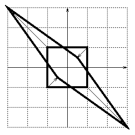

Homework 2: Linear Associators.
Due Tuesday 18 February.
60 pts. total

1. Eigenvectors (5 pts total). Consider the diagram at right, which shows a square centered at the origin, with width equal to 2.0. The square is transformed by a linear transformation into the other shape shown, with corresponding corners connected by arrows.
1A. (2 pts) What are the eigenvectors and corresponding eigenvalues of this transformation?
1B. (2 pts) Where (exactly, numerically) do the points (1,0) and (0,1) get transformed into?
Hint: With respect to the standard x,y basis, a 45o rotation has matrix representation given by:
[ 0.7071 -0.7071 ] [ 0.7071 0.7071 ]If you can figure out what the points would be if the shapes were upright diamonds, then you can rotate them 45o.Alternative Hint: A linear transformation preserves proportionality. In particular, what starts at the mid-point of a side must end up at the mid-point of the side.
1C. (1 pt) What is the matrix representation of this transformation (with respect to the standard x,y basis)?
2. The nervous system as a radio. (5 pts) Suppose all neurons were strictly Class A amplifiers (Anderson Ch. 6). Would PET or fMRI work? Why or why not?
3. Learning is dangerous. (5 pts). On pages 3 and 161. Anderson states that "learning is dangerous." Briefly discuss why learning dangerous. Very briefly discuss why some people live dangerously (i.e., why some people learn despite the danger).
4. Supervised Hebbian Learning. (15 pts. total) Start the "pa" program as described on pp.108-111 of PDP-III. At this point, the network has been trained just once on a single pattern. (Because of "clamping" the teacher values, the outputs shown during training are not the actual output activations. When desired, use "tall" or "test" to see the actual output activations.)
4A. Weight Explosion. (3 pts) "strain" the network several more times. Do the weights converge to stable values?
4B. Weight Decay. (4 pts) By hand, show what would happen
to weight w00 during the first ten training trials, if
weight decay were present. Hint: Use the equation
change in
w00 = lrate * teach0 * act0 - lrate *
w00
What value does the weight approach? Prove it by setting the change in weight to zero and solving for the weight value. How does this compare with the weight value that one "strain" would produce if lrate = 1.0 and there was no decay?
4C. Orthogonal or Linearly-Independent Training Patterns. (4 pts) Do question Q.4.2.1 on p.112 of PDP-III. (You are encouraged to read and understand the answer in the back of the book, but write your own answer in your own words.)
4D. Generalization. (4 pts) "reset" the network, and "get" the pattern file "one.pat". Then "strain" once. Now "test" the network, using the "E" option. Use a variety of input patterns (and always using the target pattern #0). How are the output patterns related to the target pattern? Why? That is, of what general principle is this a case?
5. Hebbian vs. Delta-Rule Learning. (15 pts. total) Use the "pa" program to study a network with just two input nodes and one output node. (It's easiest to use the 8x8.tem file already supplied, and just ignore the extra nodes.) The first input node represents the presence or absence of a tone (coded with activation values of +1 or 0), and the second input node represents the presence or absence of a light (coded with activation values of +1 or 0). The output node represents the presence of food or of shock (coded with activation values of +1 or -1, not 0). Use an "lrate" of 0.10.
5A. Blocking. (7 pts) You will train the network in successive phases, without resetting the weights between phases. Make sure the network is in delta-rule mode. First, train the network using an input of tone alone [+1,0] and a teacher of food [+1], until "tss" is close to zero. Next, without resetting the weights, train the network using an input of tone and light [+1,+1] and a teacher of food [+1], for 10 epochs. At this point, we might hope that the network will have learned to associate both tone (alone) and light (alone) with food, because it has been trained using both tone and light. "test" the network on tone alone and on light alone. Why has the learning of the light-food association been impeded, or blocked? Now reset the network and put it in Hebb mode, and repeat the training and testing. Is the light-food association blocked in Hebbian learning?
5B. Apparent Base-Rate Neglect. (8 pts) Set up a pattern file with the following 16 patterns in it:
input teacher frequency of pattern pair ------------ ------- ------------------------- tone (alone) food 4 tone (alone) shock 2 light (alone) food 1 light (alone) shock 5 tone+light food 1 tone+light shock 3
How often does food occur? How often does shock occur? The relative probabilities of food and shock are called their "base rates." Here, the base rate of shock is higher than the base rate of food; i.e., food is relatively rare.
Show that the probability of food, given tone, is 0.50. Show that the probability of shock, given tone, is 0.50. This might lead us to expect that the weight from tone to the output should remain at zero, since tone is paired with shock as often as it is paired with food.
Put the network in Hebb mode, reset the weights, and "ptrain" (NOT "strain"!) for 10 epochs. What is the weight from tone? Why?
Now put the network in delta-rule mode, reset the weights, and "ptrain" the network for 20 epochs (at which point the "tss" will be about 12 or 13). Why is the "tss" not zero? Why is the weight from tone not zero? (This is called "apparent base-rate neglect" because it's as if the network has ignored the low base rate of food -- it shouldn't predict a rare event.)
To answer this last question more insightfully, try this simpler case. Set up a pattern file with just two patterns in it:
tone (alone) => food tone+light => shock.
What is the probability of food given tone?
Put the network in Hebb mode and train the network for 10 epochs. What is the weight from tone?
Now, put the network in delta-rule mode, reset the weights, and "ptrain" the network until the "tss" goes to zero. Why is the weight from tone not equal to zero? (HINT: Relate this to blocking!)
6. Feature and Pattern Levels of Representation. (15 pts. total) Suppose we have some very simple pictures consisting of two pixels. We set up a linear network of two input nodes and two output nodes, and we want it to learn to associate pictures. Just what the nodes represent about the pictures is up to us, however. We'll consider two different representations: a "feature" representation and a "pattern" representation.
Feature basis: If we consider individual pixels to be features, then it is natural to define a "feature" (or "pixel") basis:
(1,0) (0,1)
This is supposed to indicate two pictures; one picture has grey levels 1 and 0, the other 0 and 1. Any picture can be described as some linear combination of these two basis pictures, and the coefficients in the resulting linear combination (i.e., the coordinates) are the input activations (and teacher values) for the feature-based network.
Pattern basis: Let's also define a pattern basis, consisting of a uniform picture and a "ramp" picture:
(1,1) (.25,.75)
Again, any picture can be described as some linear combination of these two basis pictures, and the coefficients in this linear combination (i.e., the coordinates) are the input activations (and teacher values) for the pattern-based network.
From this choice of bases it follows that the change-of-basis matrices are
-1 [ 1.0 0.25 ] [ 1.5 -0.5 ] P = [ 1.0 0.75 ] and P = [ -2.0 2.0 ]
for patterns-to-features and features-to-patterns, respectively. (The "-1" over the "P" means that the matrix on the left is the inverse of the matrix on the right.)
For example, consider the picture (1,1). In the feature basis, it has coordinates 1 and 1 (i.e., 1 times the first feature basis vector plus 1 times the second feature basis vector). What are its coordinates in the pattern basis? By inspection, we can see that the coordinates must be 1 and 0, because the picture _is_ the first pattern basis vector. But let's see if the change of basis matrix gives us this answer:
[ 1.5 -0.5 ] [ 1 ] = [ 1 ] [ -2.0 2.0 ] [ 1 ] [ 0 ]
Yes! It works! Remember, the change of basis matrix operates on coordinates, not on pictures. I've tried to distinguish pictures from coordinates by putting picture grey-levels in parentheses, and coordinates in vertical columns enclosed with brackets.
Suppose we want to associate the following pictures:
in out in out
(1.0,0.0) => (0.5,0.5) (0.0,1.0) => (1.0,0.0)
6A. Express these associations in terms of coordinates. (4 pts) First, what are the corresponding associations in terms of feature coordinates? Second, what are the corresponding associations in terms of pattern coordinates? (For the second part, use the change of basis matrix.)
6B. Isomorphism at Asymptote. (3 pts) Use the "pa" program
in delta-rule mode to see if the feature-based and pattern-based
networks converge to "similar" weight matrices, where "similar" is
used in the technical sense. That is, if WF is the
asymptotic weight matrix for the feature-based network, and
WP is the asymptotic weight matrix for the pattern-based
network, show that
WF = P-1 * WP
* P.
6C. Non-Isomorphic Course of Training. (4 pts) Now test whether the weight matrices are similar throughout the course of training. Are the feature-based and pattern-based weight matrices "similar" (in the technical sense) after 5 epochs of training? Test generalization as well, before asymptote is reached. Test the the pattern-based network with the input picture (1,0) expressed in pattern coordinates, and test the feature-based network with the same input picture expressed in feature coordinates. Are the outputs identical in terms of the picture they represent?
6D. Non-Isomorphism under Local Damage. (4 pts) Now use the asymptotic weight matrices of the feature-based and pattern-based networks, and suppose we inflict local damage by excising the first input node from each network. Test each damaged network with the input picture (1,1). Use the appropriate input coordinates for each network! Are the outputs from the two damaged networks equivalent in terms of the picture they represent?
Copyright © 1997 by John K. Kruschke